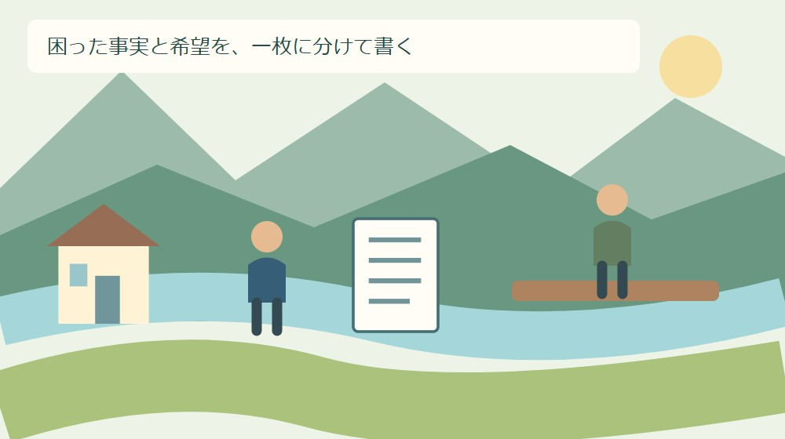
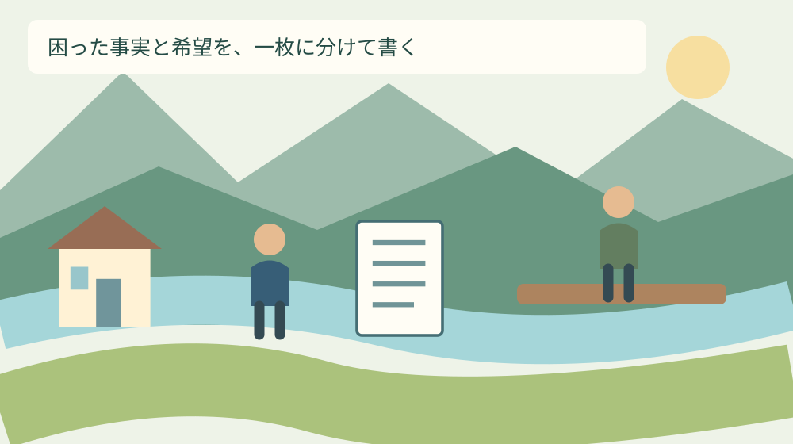
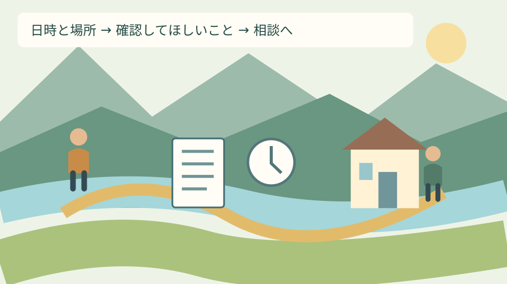

手続き・制度
行政相談への伝え方｜森町の困りごとを1枚に

Q. 行政への困りごとを、何からどう伝えればいい？
A. 困った日時・場所・確認できた事実と、希望する対応を一枚に分けて書くと、相談の目的を伝えやすくなります。これは筆者の提案で、森町の指定様式ではありません。行政相談は担当機関とは異なる立場から解決を促す仕組みで、希望の実現を保証するものではありません。今日は日時・場所・希望する対応の三つをメモしてください。
困っている人にも、受け止める窓口にも手間がある
行政の手続きや公共の設備で困ったとき、仕事を休み、家族の送迎を調整して窓口へ行く。その前に電話で説明を重ねている人もいます。森町の暮らしを支える住民の手間を、相談する側の準備不足という一言で片付けたくありません。困っている時点で、すでに負担を払っています。
一方、窓口で受け止める人にも、担当を確かめ、記録を調べ、関係する部署へ確認する仕事があります。日時や場所が曖昧なままでは、何を探せばよいか決められません。私はどちらかを責めるより、同じ事実を見て話せる一枚を作ることから始めたいと思います。
この記事では、行政相談へ困りごとを伝えるためのメモを提案します。予約日程の一覧でも、希望が通る言い方の指南でもありません。自分が確認できた事実、暮らしへの影響、希望する対応を分け、相談先で話を始めやすくするための下書きです。
私は大石浩之（磐田市／不動産業）です。住まいの維持費や移動の段取りを考える立場から、相談の準備を家族が扱える大きさにしたいと考えています。以下の記入例は説明のために作った例であり、私や実在の住民が受けた相談対応の体験談ではありません。
事実整理｜行政相談月間は9月と10月
総務省の公式記事は、2024年度から、従来の行政相談週間を9月・10月の2か月間の行政相談月間へ改めたと説明しています。2025年10月3日公開の記事で確認できる制度の説明です。2026年9月21日のこの記事では、相談内容を整理するきっかけとして取り上げます。
意外かもしれませんが、行政相談は困りごとの担当部署へ直接要望を届けることと同じ仕組みではありません。総務省は、国の行政等への苦情や意見・要望を受け、担当行政機関とは異なる立場から解決や実現を促す仕組みと説明しています。
担当機関と異なる立場であることは、希望した工事や判断をその場で決定できることを意味しません。相談する前に、何を実施してほしいのかと、まず何を確認してほしいのかを分けておくと、希望と相談の役割のずれに気付きやすくなります。
月間の説明だけから、森町で特定の日に臨時相談会が開かれるとは判断できません。また9月と10月だけしか相談できないという意味でもありません。利用する窓口の日時や予約方法は、町などの公式案内で別に確かめます。

一枚のメモは指定様式ではなく、会話の下書き
一枚のメモは、森町や総務省が提出を義務付ける様式ではありません。ここで示す欄は、私が会話の下書きとして提案するものです。きれいに完成させることより、口頭で抜けやすい内容を手元に残すことを目的にしています。
紙の上から、困った日時、場所、確認できた事実、生活への影響、これまでの連絡、希望する対応、連絡を受けられる方法の順に置きます。全部の欄を埋める必要はありません。分からない箇所は未確認と記し、相談のときに尋ねる材料として残します。
| 欄 | 書く内容 |
|---|---|
| 日時・場所 | 何月何日の何時ごろ、どこで困ったか |
| 確認した事実 | 見たこと・受け取った説明。推測は分ける |
| 生活への影響 | 移動、手続き、家族の予定への支障 |
| 希望する対応 | まず確認してほしい点を一つ |
例えば、申請書の記載方法が分からないという架空の例なら、書類の正式な名前、説明を受けた日、分からない欄、回答が必要な日を置きます。「対応が悪い」という感想だけにせず、どの説明が不足していると感じるのかまで書くと、質問が具体化します。
日時・場所・事実を、感想と分けて置く
日時は分かる範囲で書けば十分です。正確な時刻を記録していなければ、午前か午後か、何時ごろかを区別し、後から正確な数字を作りません。継続する困りごとなら、最初に気付いた日と、その後に確認した日を別々に置きます。
場所は町名だけでなく、施設名、窓口名、道路の目印など、自分が確認できる範囲を添えます。ただし設備の所有者や管理者を見た目で決め付けません。「ここにある設備について担当を知りたい」と書くことも、一つの具体的な相談になります。
事実と気持ちは、どちらも書いてよいと私は考えます。ただ、同じ欄に混ぜると、調べてほしい事柄が見えなくなります。受け取った説明や見た状態を事実欄へ、困ったことや不安を影響欄へ分ければ、気持ちを消さずに確認点を示せます。
家族から聞いた話は、その人から聞いた内容と記し、自分が直接見たことと区別します。誰かの意図を推測して断定するより、何の記録や説明を確かめたいかを残します。窓口へ持参する前に、この一文は見た事実か、私の受け止めかを読み直せます。
良い点｜担当機関以外に話せる入口がある
行政相談の良い点は、担当行政機関とは異なる立場から話を受け止め、解決や実現を促す入口があることです。担当へ一度話したものの、どこへ確認すればよいか分からない人にとって、相談の役割を知ること自体が次の手掛かりになります。
森町の「暮らしの相談」は、総務省から委嘱された行政相談委員が国の行政機関への苦情や要望を受ける案内を掲載しています。私はこうした入口が町の生活情報の中にある点を評価します。ただし町内の困りごとすべてが同じ相談の対象とは限りません。
相談の準備として一枚を作る利点は、住民自身も何を望んでいるか見直せることです。説明を求めたいのか、現場の確認を頼みたいのか、担当先を知りたいのか。希望が三つあれば、一番先に確かめたい一つを丸で囲むだけでも話の始まりが変わります。
私は、すでに地域や窓口の担い手が積み重ねてきた対応を無かったことにして、仕組みを作り直せばよいとは言いたくありません。使える入口を確かめ、その入口までの移動や説明の負担を一つ減らす。その順なら、今日の相談にも生かせると考えます。
注文したい点｜窓口を移るたびの説明を減らしたい
相談できる入口は評価する。その上で、住民が同じ説明を繰り返す手間は減らしたい。私はここを曖昧にしたくありません。部署を移るたびに最初から話し直すことが続けば、家族の時間も、話を聞く窓口の時間も失われます。相談先を案内するだけで終わらない工夫が要ります。
これは、森町の窓口で実際にたらい回しが起きたと断定する話ではありません。私が望むのは、別の窓口へつなぐときに、次の担当先、引き継ぐ内容、本人がもう一度伝える事項を分かる形にすることです。相談者のメモも、その確認に使えます。
一方で、すべての資料を何も考えず別の相手へ渡してよいとも思いません。相談者には、どの内容を誰に伝えるのかを確かめる余地が必要です。自分で控えを持ち、紹介先に伝えてよい内容を相談することが、説明を省くことと情報を守ることの両方につながります。
窓口を一度使っても解決しなかったなら、次は何を確認すればよいかを一つ聞く。その小さな一歩を残したいと思います。「別の担当です」で会話が終わるより、連絡先と尋ねる内容が手元に残る方が、住民は次の移動や電話の予定を立てられます。

対案・結論｜今日は日時・場所・希望を三行に
今日の作業は、困った日時、場所、希望する対応を三行に書くところまでです。紙がなければ、本人が読み返せるメモでも構いません。長い経緯を整える前に、いつ、どこで、何を確かめたいのかという三つの欄を作ります。
希望する対応は、相手が確認できる行動に置き換えてみます。「何とかしてほしい」なら、担当機関を教えてほしい、今の扱いの理由を説明してほしい、現場の状態を確認してほしい、のどれに近いかを考えます。要望を小さくするのではなく、最初の確認を明確にする作業です。
森町の相談日程や窓口の分け方は、相談の予約と日程を確認する記事で整理しています。日時を確かめる作業と、今回の伝える内容を作る作業を分ければ、家族に頼むことも一つずつ決められます。
書類の提出など期限が示されている場合は、その日付をメモの上に残します。相談したから期限が延びると自己判断せず、必要な手続きを担当へ確かめてください。危険が迫っている状況では、メモの完成を待たず、その状況に応じた連絡先への連絡を優先します。
写真と連絡履歴は、何を示す資料かを添える
写真を添えるなら、何月何日に、どの場所の、何を示すために撮ったかを一行添えます。写真があるだけでは、困りごとの内容や頻度までは分かりません。撮影できなかった日時や、自分が確認していない状態を、写真から補って説明しないようにします。
資料を作るために危険な場所へ入ったり、他人の敷地へ無断で立ち入ったりする必要はありません。私は証拠を増やすことより、今ある資料で何が分かり、何が分からないかを伝えることを優先します。人物や関係のない個人情報が写る場合は、提出の必要性を窓口で相談します。
電話や来所の履歴は、連絡日、連絡した部署、聞いた内容、次に行うことを分けて残します。回答の言葉を正確に覚えていなければ、要旨であると記します。返事がなかったことと、返事はあったが自分の疑問が残ったことも、別の状態として書けます。
騒音などの記録の考え方は、森町の公害苦情で残す記録でも扱っています。相談先ごとに確認する内容が異なるため、写真を大量に用意する前に、必要な項目を確かめると準備の手間を絞れます。
森町の相談先は、困りごとの種類から選ぶ
森町の「暮らしの相談」の行政相談に関する問い合わせは、住民生活課住民係、電話0538-85-6312です。2026年4月23日更新の町の案内で確認しました。この記事は日程の一覧ではないため、利用する日と受付方法は公式ページで確認してください。
町の「公害に関する苦情相談」は、相談内容、発生する時期や場所、経緯などを確認すると案内しています。2020年9月15日更新の説明です。国の行政機関への苦情を扱う行政相談と同じ入口と決めず、困りごとの種類から担当を確かめます。
同じ公害相談の案内は、個人間の民事上の問題には介入できないと説明しています。近隣で起きているという場所の共通点だけでは、相談先を一つに決められません。何が起きているか、何を求めたいかを一行にすると、担当を尋ねるときの材料になります。
商品やサービスの契約で困っている場合は、森町の消費生活相談も確認先です。行政への要望と、契約相手との困りごとを分けます。町に住んでいるから同じ窓口というまとめ方では、かえって説明と移動が増えてしまいます。
家族に残す記録は、回答と未決定を分ける
相談後は、説明を受けたこと、まだ決まっていないこと、次に確認することを三つに分けて残します。「相談した」という一語だけでは、家族は何が進んだか分かりません。連絡を待つのか、自分から別の窓口へ連絡するのかまで分けられると、段取りが具体的になります。
希望した対応と、相手から説明された対応も別に書きます。こちらが修理を希望したことだけを残すと、家族が修理の実施まで決まったと受け止めるかもしれません。確認中、担当紹介、回答済みなど、分かった範囲の状態を言葉で残します。
連絡を待つ場合は、見通しを尋ねられるか、次の連絡先はどこかをその場で確かめます。答えがまだ出せないと言われたら、未定と記します。自分で日数を足して期限と扱わず、相手と確認した内容と、自分が再確認する予定を区別しておきます。
家族に共有するメモは、手伝ってもらうために必要な範囲に絞ります。送迎する人には日時と場所、電話する人には質問と連絡先を伝えるなど、役割に合わせられます。困りごとの詳細を全員に広げることが、必ずしも負担を減らすわけではありません。
大石の視点｜良い入口を、使える段取りへ
私は森町に、暮らしを支える人や地域のつながりの力を感じています。それでも担い手の時間と移動の負担に頼り続けるだけでは、相談の入口があっても使えない人が残ります。制度があることを評価した上で、そこへ届く段取りに注文する立場を取りたいと思います。
私の迷いは、一枚を勧めることで、困っている人にまた宿題を増やさないかという点です。文章を整えるのが難しい人にも、完成したメモを求めるつもりはありません。だから今日の作業は三行に絞り、空欄のまま相談してよい下書きとして扱います。
要望は強い言葉にすれば届くとは限りませんが、丁寧に薄めればよいとも思いません。生活への支障と、確かめたい対応ははっきり書く。その周りを日時、場所、記録で固める。私はその方が、住民の困りごとを曖昧にせず、窓口とも確認しやすいと考えます。
相談のあとに残す次の一歩
相談の準備は、立派な陳情書を作る競争ではありません。いつ、どこで困り、何を確かめたいのかを自分の言葉で残すことから始められます。9月・10月の行政相談月間を、窓口の名前を覚えるだけで終わらせず、手元の困りごとを一つ整理する機会にできます。
今日、一枚の上に日時・場所・希望する対応を書いてください。分からない欄は未確認のままで構いません。相談したあとは、回答と次の連絡先をそこへ足します。住民も窓口も同じ説明を繰り返す負担を減らせるよう、話の出発点と次の一歩を一枚に残すことを提案します。
よくある質問
手続きを進める前に確認したい条件を、質問ごとに整理します。
一枚のメモが完成しないと相談できませんか？
完成を相談の条件にする趣旨ではありません。この記事のメモは筆者が提案する準備方法で、森町の指定様式ではありません。分からない欄は未確認と書き、分かる日時や場所、困っていることから伝えてください。相談の対象や当日の持ち物、受付方法は、利用したい窓口の公式案内で確認します。
行政相談に伝えれば、要望は必ず実現しますか？
必ず実現するとは限りません。総務省は、行政相談を担当行政機関とは異なる立場から解決や実現を促す仕組みと説明しています。希望した工事や処分を決定する窓口と同じではありません。要望に加え、担当機関、確認してほしい事項、次に連絡できる先を相談し、回答を受けた内容と未決定事項を分けて記録してください。
近隣の騒音や契約の困りごとも同じ窓口ですか？
内容によって窓口が異なります。森町は公害に関する苦情相談を案内し、相談内容や発生時期、場所、経緯等を確認するとしています。一方、商品やサービスの契約、民事上の争いには別の相談先が関わります。何が起き、何を確認したいかを一行にして、担当窓口を確かめてから資料を用意してください。

公式情報源
2026年9月21日確認。制度・数値は変更される場合があります。個別の適用は担当窓口へ、医療・税務・法律等の専門判断は各専門家へ確認してください。